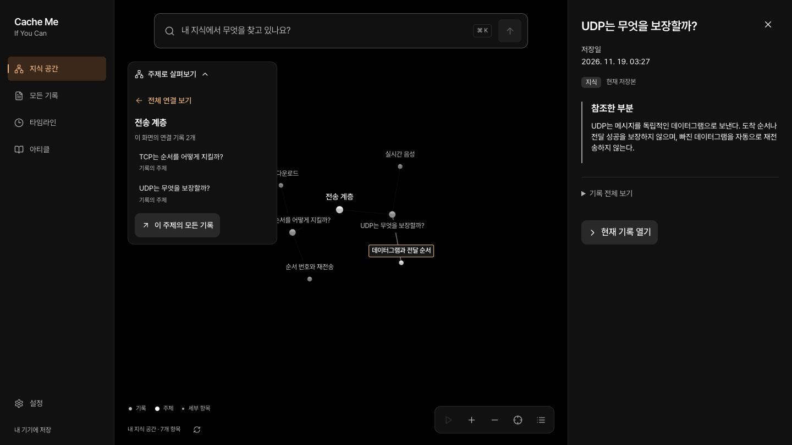

유형·주제 필터
‘모든 기록’에서 유형과 주제를 고릅니다. 저장일 최신순 또는 제목순으로 정렬하고 다음 목록으로 넘어갈 수 있습니다.
설계 문서 / 제품 기능
기록은 저장·조회·정정의 단위입니다. 지식 공간은 기록 사이의 연결과 검색 근거를 보여 주고, 아티클은 필요한 기록을 인용해 별도 글로 발행합니다.
저장 요청에서 지정한 내용을 나중에 따로 찾거나 수정할 수 있는 단위로 나눕니다. 각 기록은 독립된 ID와 본문 버전을 갖습니다. 제목과 유형은 선택 사항입니다.
저장 요청 예시 · “지금까지 배운 TCP와 UDP를 cache-me로 정리해줘.”
‘모든 기록’의 ‘새 기록’에서 Markdown 본문을 쓰고 미리 본 뒤 저장합니다. 편집 중 닫으면 변경한 초안을 버릴지 확인합니다. Codex에는 “한 문서로 남겨줘” 또는 “인용문은 원문대로 남겨줘”처럼 원하는 단위를 지정할 수 있습니다.
| 기록 유형 | 나중에 되찾을 내용 |
|---|---|
| 지식 | 새 개념의 설명, 두 방법의 차이, 해결 절차 |
| 경험·회고 | 직접 해 본 일, 관찰한 결과와 돌아본 생각 |
| 맥락 | 당시 프로젝트의 제약과 선택에 영향을 준 조건 |
| 아이디어·계획 | 다음 실험에서 해 보고 싶은 일과 진행 단계 |
| 결정 | 무엇을 선택했는지, 이유와 다시 검토할 조건 |
| 자료 | 다시 쓸 템플릿, 코드, 인용할 문서 원문 |
한 기록에 여러 유형을 붙이거나 유형을 비워 둘 수 있습니다. 네트워크처럼 여러 기록을 가로지르는 관심사는 ‘주제’로 묶습니다.
두 화면은 같은 일반 기록을 서로 다른 기준으로 보여 줍니다. 목록은 유형·주제와 정렬 순서를 사용하고, 타임라인은 실제 저장한 날짜로 기록을 묶습니다.
‘모든 기록’에서 유형과 주제를 고릅니다. 저장일 최신순 또는 제목순으로 정렬하고 다음 목록으로 넘어갈 수 있습니다.
‘타임라인’에서 월을 고르면 실제로 저장한 날에 따라 기록이 묶입니다. 금요일 일을 월요일에 적었다면 월요일에서 찾습니다.
‘경험·회고’나 ‘결정’으로 좁혀 당시 조건과 이유를 읽습니다. 후속 실험이 끝났다면 새 관찰을 남기고 두 기록의 관계를 표시할 수 있습니다.
목록과 타임라인은 같은 유형·주제 필터를 씁니다. ‘지식 공간’의 질문에는 이 필터가 이어지지 않습니다. 검색 근거는 현재 버전의 검색 준비가 끝나고 출처를 검증할 수 있는 기록에서 찾습니다.
‘전송 계층’ 주제를 고르면 그래프에서 TCP와 UDP 기록의 연결이 강조됩니다. UDP 기록을 누르면 본문 전체가 열리고, 세부 항목 ‘데이터그램과 전달 순서’를 누르면 그 항목이 가리키는 문단부터 읽습니다.
TCP는 순서를 어떻게 지킬까?
UDP는 무엇을 보장할까?
UDP는 메시지를 독립적인 데이터그램으로 보낸다. 도착 순서나 전달 성공을 보장하지 않으며, 빠진 데이터그램을 자동으로 재전송하지 않는다.
실시간 음성에서는 앱이 재생 시한을 넘긴 음성 조각을 건너뛰고 다음 조각을 재생할 수 있다.
UDP는 메시지를 독립적인 데이터그램으로 보낸다. 도착 순서나 전달 성공을 보장하지 않으며, 빠진 데이터그램을 자동으로 재전송하지 않는다.

저장한 본문과 맞는 기존 주제는 재사용하고, 새 범위가 뚜렷하면 주제를 만들며, 분류가 애매하면 보류합니다. 주제 정정은 Codex에 요청합니다. ‘뒷받침함’이나 ‘정정함’ 같은 기록 간 관계는 사용자가 근거와 함께 지정합니다. 그래프를 그릴 수 없는 환경에서도 연결 목록으로 탐색할 수 있습니다.
질문을 하면 기본 그래프 위에 이번 검색에서 읽은 본문 조각(청크)이 나타납니다. 답변에 인용한 조각은 ‘답변 출처’, 읽었지만 인용하지 않은 조각은 ‘검색한 내용’으로 표시합니다. ‘검색 응답 닫기’를 누르면 기본 그래프로 돌아갑니다.
검색 예시 · “UDP에서 음성 조각이 빠지면 어떻게 돼?”

설정에서 먼저 검색 모델과 기록의 검색 준비 상태를 확인합니다. 준비 중인 기록과 검색 준비에 실패한 기록이 따로 표시됩니다. 답변 생성에는 연결한 모델 계정이 필요합니다.
검색할 수 있는 상태여도 읽은 근거가 질문을 뒷받침하지 않으면 확인 범위가 제한됩니다. 유형이나 시점을 기억한다면 목록·타임라인에서 해당 기록을 직접 열 수 있습니다.
같은 저장본에서도 읽은 구간이 다르면 각각 표시합니다. 같은 기록·버전·세부 항목의 같은 구간을 여러 번 읽으면 한 조각으로 합칩니다. 한 질문에서 최대 20개 조각을 보여 주며 답변에 인용한 조각을 우선합니다.
아티클에서 [1]을 누르면 글을 읽던 자리에 출처가 열립니다. 넓은 화면에서는 옆 패널로, 좁은 화면에서는 대화상자로 보입니다. 닫으면 같은 인용 번호로 돌아갑니다.
| 인용한 자료 | [1]에서 읽을 수 있는 내용 |
|---|---|
| 저장한 TCP 기록 | 인용 당시 버전과 원문을 보여 줍니다. 일부 문단을 인용했다면 ‘참조한 부분’ 아래의 ‘기록 전체 보기’에서 그 버전의 전체 본문을 펼칩니다. |
| 나중에 본문을 고친 기록 | 과거 저장본과 재검토 안내가 함께 보입니다. 새로 덧붙인 내용을 확인하려면 ‘모든 기록’에서 현재 기록을 엽니다. |
| 삭제된 기록 | 출처 패널에 “인용한 기록을 더 이상 열 수 없습니다.”가 표시됩니다. 아티클 본문은 계속 읽을 수 있습니다. |
| 외부 문서·논문 | 제목, 도메인, 글에서 참고한 요지를 보여 줍니다. 직접 ‘원문 열기’를 고르면 새 탭에서 원문이 열립니다. |
직전 아티클 버전에 있던 기록 인용은 재검토 상태여도 같은 버전·구간으로 유지할 수 있습니다. 새로 추가하거나 교체하는 기록 인용은 발행 시점에 검증할 수 있어야 합니다. TCP 기록의 수정 내용을 반영하려면 개정에서 그 새 버전과 구간을 지정합니다.
발행한 글은 ‘아티클’에서 읽고, 개정하면 같은 글 주소에서 새 버전이 열립니다. ‘모든 기록’·타임라인·지식 그래프에는 글의 원자료인 공부 기록이 남습니다. 지식 공간에서 질문할 때에도 이 기록들이 검색 대상입니다.
작성 요청 예시 · “방금 저장한 두 기록으로 TCP와 UDP의 차이를 비교하는 아티클을 써줘.”
Codex는 관련 기록의 원문 구간을 읽고 부족한 설명을 공식 문서나 논문으로 보강합니다. 초안 요청은 대화에서 마치고, 발행 요청은 등록한 아티클의 주소를 돌려줍니다.

| 이해하고 싶은 내용 | 글에서 볼 수 있는 자료 |
|---|---|
| 여러 조건의 차이 | 한 항목씩 비교하는 표. TCP와 UDP의 순서 보장·재전송 여부 비교에 적합합니다. |
| 동작하는 순서 | 한 번에 한 단계씩 읽는 흐름도. 요청부터 결과까지 순서를 따라갑니다. |
| 숫자의 크기와 구성 | 같은 기준축을 쓰는 비교 막대, 부분을 합산하는 누적 막대. 수치에는 단위와 필요한 분모를 함께 표시합니다. |
긴 글은 접이식 목차로 원하는 절을 바로 열 수 있습니다.
cache-me는 사용자가 지정한 내용을 기록으로 저장·조회·정정하고, cache-me-article은 관련 기록을 읽어 아티클을 작성·발행합니다. Codex가 요청에 맞는 스킬의 절차에 따라 로컬 MCP 도구를 호출합니다.